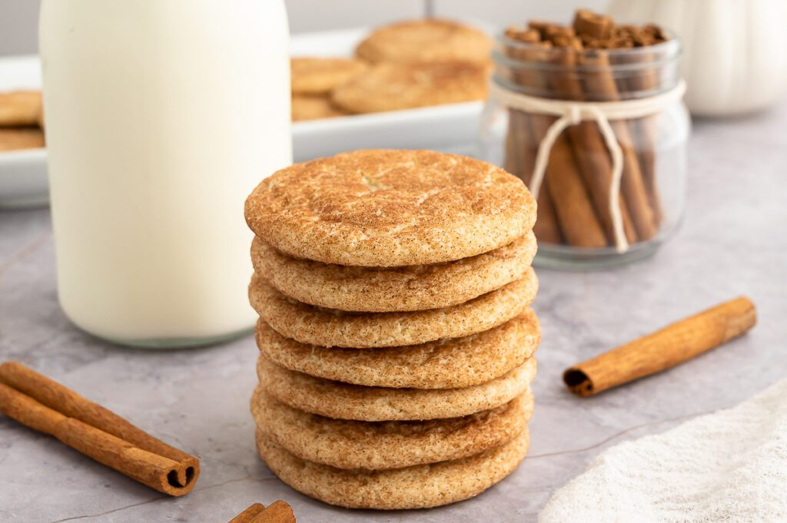

My Favorite Recipe
The Best Snickerdoodle Cookies
By Jane Smith
Instructions:
- Preheat oven to 375°F (190°C).
- In a large bowl, cream together the softened butter and granulated sugar until light and fluffy.
- Add in the eggs one at a time, mixing well after each addition.
- In a separate bowl, whisk together the flour, cream of tartar, baking soda, and salt.
- Add the dry ingredients to the butter mixture and mix until just combined.
- In a small bowl, mix together the sugar and cinnamon for rolling.
- Shape the dough into 1-inch balls and roll each ball in the cinnamon-sugar mixture to coat.
- Place the coated balls onto ungreased baking sheets.
- Bake for 10-12 minutes, or until edges are lightly golden.
- Allow the cookies to cool on the baking sheets for 5 minutes, then transfer to wire racks to cool completely.
